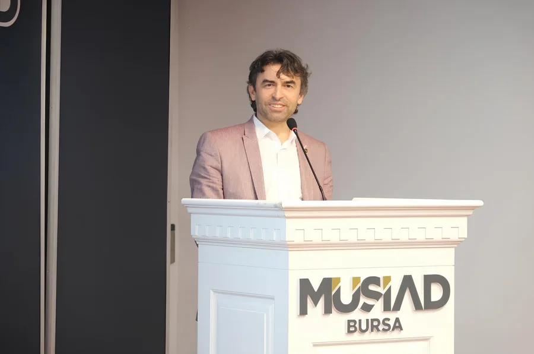

LİDERLİK BUKAGEM
Kariyer yolculuğuna
birlikte yön vermek.
Kariyer Gelişimi Uygulama ve Araştırma Merkezi Müdürü
BUKAGEM, Bursa Teknik Üniversitesi öğrencileri ve mezunlarının kariyer gelişimini destekler. BTÜ Kariyer Modeli; kariyer planlaması, mezun ve sektör mentörlüğü aracılığıyla üniversite ile iş dünyasını buluşturur.
BUKAGEM’i keşfet